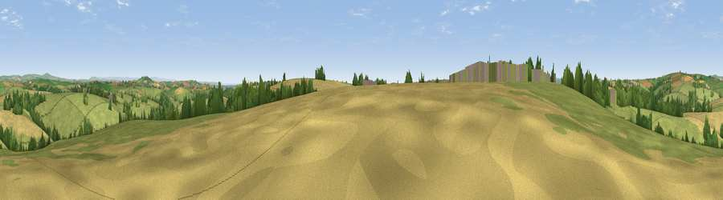

Viewpoint near Pelynt
#14638 in England · top 28% of its area beats it · near Pelynt · access?Where it is
The exact computed spot (SX 20725 55575). Click the marker for map links.
Public access: no public right of way or access land is recorded at this exact spot — it may be on private land. Computed from Natural England's CRoW access layer and OpenStreetMap rights of way — not the legal definitive map. Always verify locally.
The view, rendered

A 360° render of this exact spot computed from the terrain model, tree cover and land cover — summer colours, afternoon light, calibrated against photographs of famous viewpoints. Real trees, hedges and buildings will differ in detail.
The panorama
Grey silhouette: terrain skyline in each direction (720 bearings, Earth curvature and refraction included). Dashed green: skyline with trees (+15 m) and buildings (+8 m) as obstacles. Blue strip: how far the ground is visible on each bearing.
Where the view opens
Wedge length = distance to the farthest visible ground on that bearing (vegetation-aware). Rings at 10, 25 and 50 km.
What fills the view
65% grassland · 24% cropland · 10% woodland ·
Angular shares of the visible panorama (visual magnitude), not map area. Landscape diversity 0.39 (0–1 Shannon).
Key numbers
More beautiful places nearby
The staircase of upgrades: each row has a higher view potential than everything closer. Driving times are estimates from straight-line distance, calibrated against real road routing — check an actual route before setting out.
| Place | Direction | Drive | Score |
|---|---|---|---|
| Viewpoint near Lanreath | NNW · 4 km | ~9 min | 75.7 |
| Viewpoint near Talland | SE · 5 km | ~11 min | 78.8 |
| Viewpoint near Polperro | S · 5 km | ~11 min | 81.9 |
| Viewpoint near Polperro | SSW · 5 km | ~11 min | 83.7 |
| Pencarrow Head | SW · 7 km | ~15 min | 86.0 |
| Viewpoint near Stenalees | W · 21 km | ~35 min | 88.0 |
| Viewpoint near Crackington Haven | NNW · 39 km | ~59 min | 88.1 |
| Viewpoint near Combe Martin | NNE · 100 km | ~125 min | 88.9 |
50.37269, -4.52247 · source: screening · position refined by local search. Computed location — check access rights before visiting.